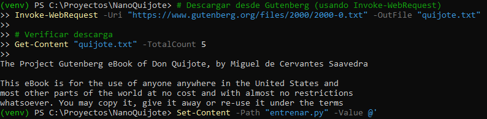

Captura 1 · Descarga del corpus
Obtención y comprobación de
quijote.txt.

Invoke-WebRequest
Get-Content
Corpus Quijote
En esta captura se utiliza el comando Invoke-WebRequest desde PowerShell para descargar
el eBook del Quijote desde Project Gutenberg y guardarlo localmente con el nombre quijote.txt.
A continuación se ejecuta Get-Content "quijote.txt" -TotalCount 5, mostrando las primeras
cinco líneas del archivo, donde se ve el encabezado de Project Gutenberg.
Esto permite comprobar que el archivo se ha descargado sin errores y que el contenido corresponde al libro que se va a usar como corpus para el entrenamiento.